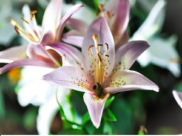

About Lilly :
Lilium (members of which are true lilies) is a genus of herbaceous flowering plants growing from bulbs, all with large prominent flowers. Lilies are a group of flowering plants which are important in culture and literature in much of the world. Most species are native to the temperate northern hemisphere, though their range extends into the northern subtropics. Many other plants have "lily" in their common name but are not related to true lilies.
Lilies are tall perennials ranging in height from 2–6 ft (60–180 cm). They form naked or tunicless scaly underground bulbs which are their organs of perennation. In some North American species the base of the bulb develops into rhizomes, on which numerous small bulbs are found. Some species develop stolons. Most bulbs are buried deep in the ground, but a few species form bulbs near the soil surface. Many species form stem-roots. With these, the bulb grows naturally at some depth in the soil, and each year the new stem puts out adventitious roots above the bulb as it emerges from the soil. These roots are in addition to the basal roots that develop at the base of the bulb. Lily, petal The flowers are large, often fragrant, and come in a wide range of colors including whites, yellows, oranges, pinks, reds and purples. Markings include spots and brush strokes. The plants are late spring- or summer-flowering. Flowers are borne in racemes or umbels at the tip of the stem, with six tepals spreading or reflexed, to give flowers varying from funnel shape to a "Turk's cap". The tepals are free from each other, and bear a nectary at the base of each flower. The ovary is 'superior', borne above the point of attachment of the anthers. The fruit is a three-celled capsule.[3]
Many species are widely grown in the garden in temperate, sub-tropical and tropical regions.[24] They may also be grown as potted plants. Numerous ornamental hybrids have been developed. They can be used in herbaceous borders, woodland and shrub plantings, and as patio plants. Some lilies, especially Lilium longiflorum, form important cut flower crops. These may be forced for particular markets; for instance, Lilium longiflorum for the Easter trade, when it may be called the Easter lily. Lilies are usually planted as bulbs in the dormant season. They are best planted in a south-facing (northern hemisphere), slightly sloping aspect, in sun or part shade, at a depth 2½ times the height of the bulb (except Lilium candidum which should be planted at the surface). Most prefer a porous, loamy soil, and good drainage is essential. Most species bloom in July or August (northern hemisphere). The flowering periods of certain lily species begin in late spring, while others bloom in late summer or early autumn.[25] They have contractile roots which pull the plant down to the correct depth, therefore it is better to plant them too shallowly than too deep. A soil pH of around 6.5 is generally safe. The soil should be well-drained, and plants must be kept watered during the growing season. Some plants have strong wiry stems, but those with heavy flower heads may need staking.[26][27]
Taxonomical division in sections follows the classical division of Comber,[5] species acceptance follows the World Checklist of Selected Plant Families,[6] the taxonomy of section Pseudolirium is from the Flora of North America,[7] the taxonomy of Section Liriotypus is given in consideration of Resetnik et al. 2007,[8] the taxonomy of Chinese species (various sections) follows the Flora of China[9] and the taxonomy of Section Sinomartagon follows Nishikawa et al.[10] as does the taxonomy of Section Archelirion.[11] The World Checklist of Selected Plant Families, as of January 2014, considers Nomocharis a separate genus in its own right,[12] however some authorities consider Nomocharis to be embedded within Lilium, rather than treat it as a separate genus.[13][14]
There are seven sections: Martagon, Pseudolirium, Liriotypus, Archelirion, Sinomartagon, Leucolirion, Daurolirion.